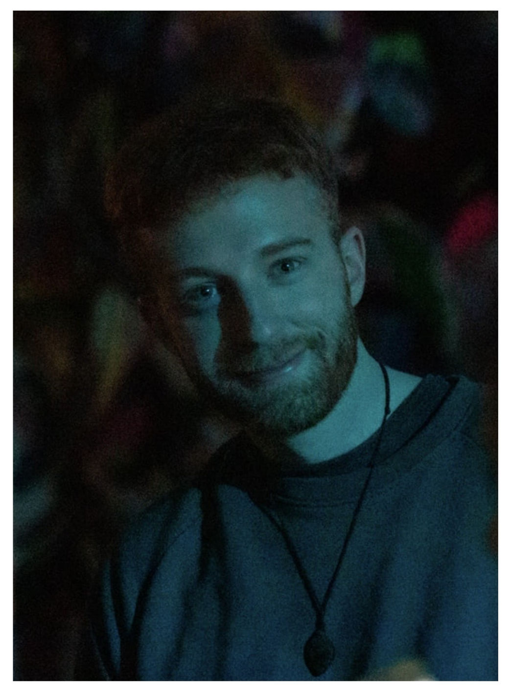

Portfolio · 2026
A geoscience PhD,
working with data:
analyzing patterns,
building visualizations,
asking better questions.
Read on
01 — About
A short introduction.
I hold a PhD in geoscience from UiT The Arctic University of Norway, with a focus on magmatic and experimental petrology and ore geology.
Along the way I've fallen for the work that surrounds the science: cleaning messy datasets, finding patterns, and building visualizations that make complex data legible to other people. This site collects published research alongside small data projects I've built — partly to learn new tools, partly to see how the methods I use on geochemistry translate to other domains.

02 — Publications
Research papers.
-
EMODnet Seafloor Geology: The wavy cruise towards a hierarchical, machine-readable geomorphology vocabulary.
doi.org/10.5194/egusphere-egu26-12405 -
An international vocabulary for anthropogenic deposits to improve geological mapping and modelling.
doi.org/10.5194/egusphere-egu26-16704 -
Geological Maps and Data Gaps Assessment: The Key factors for a Solid Geological Background.
doi.org/10.5194/egusphere-egu26-8882 -
From Observation to Understanding: The Lithotectonic Framework as Foundation for Europe’s Digital Geological Infrastructure.
doi.org/10.5194/egusphere-egu26-595 -
Plagioclase Fe X-ray Absorption Spectroscopy: Potential for a New Magmatic Oxybarometer, in: Geological Society of America Abstracts with Programs.
doi.org/10.1130/abs/2025am-7764 -
One step beyond: The rocky path towards the new GSEU lithology vocabularies.
doi.org/10.5194/egusphere-egu25-11629 -
Lithotectonic map of Europe – methodology, contribution to geosciences and further inspiration for territories outside Europe.
doi.org/10.5194/egusphere-egu25-13479 -
The geological Gordian knot - lithological challenges in the world of geological mapping.
doi.org/10.5194/egusphere-egu25-9972 -
An experimental study of the effect of water and chlorine on plagioclase nucleation and growth in mafic magmas: application to mafic pegmatites.
doi.org/10.5194/ejm-35-1111-2023 ↗ -
Petrogenesis of zoned and unzoned mafic pegmatites: an insight from the Palaeoproterozoic mafic-ultramafic Hamn intrusion, Northern Norway.
doi.org/10.1016/j.lithos.2022.106818 ↗
03 — Education
Training.
-
Institut des Sciences de la Terre d'Orléans
Research stay · France
-
UiT The Arctic University of Norway
PhD candidate, Geoscience
-
Georg-August-Universität Göttingen
M.Sc. Geosciences
-
Georg-August-Universität Göttingen
B.Sc. Geosciences · with distinction
04 — DS Projects
Data work, in public.
-
Streamlit · Geopandas · Matplotlib
Historical weather, mapped by Land.
An interactive visualization of German weather data — air temperature, precipitation, sunshine duration — by federal state, using open data from the Deutscher Wetterdienst and shapefiles from the Bundesamt für Kartographie und Geodäsie. Mostly an exercise in pairing GeoPandas with matplotlib inside a Streamlit app.
-
Spotify API · Web scraping · Pandas
Billboard top-ten, sixty years of audio features.
Inspired by a blog post by Robert Ritz, this project scrapes Billboard Hot 100 top-ten singles from Wikipedia, then pulls audio analysis from the Spotify API via spotipy. The question: do the most popular keys and tempos shift across decades?
-
Altair · Datetime · Streamlit
Fitness data, rebuilt from Garmin Connect.
A reconstruction of the fitness data displays from Garmin Connect, built mostly to practice handling datetime data and making interactive plots with Altair.
05 — Contact